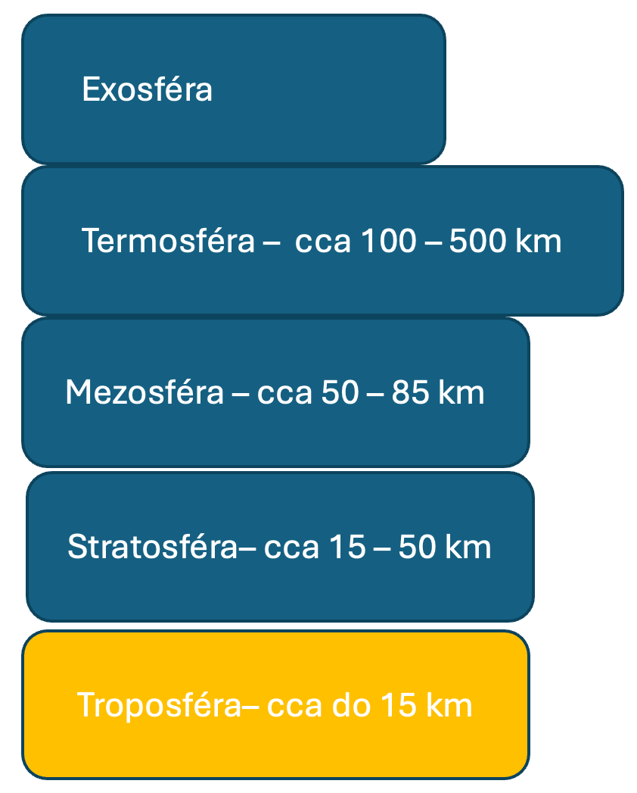
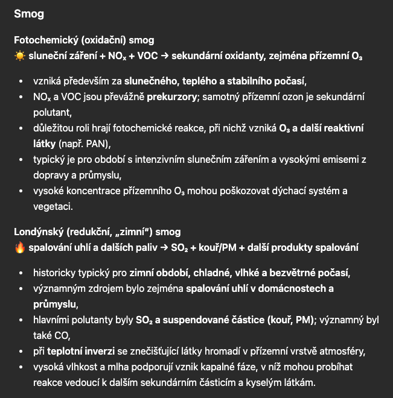
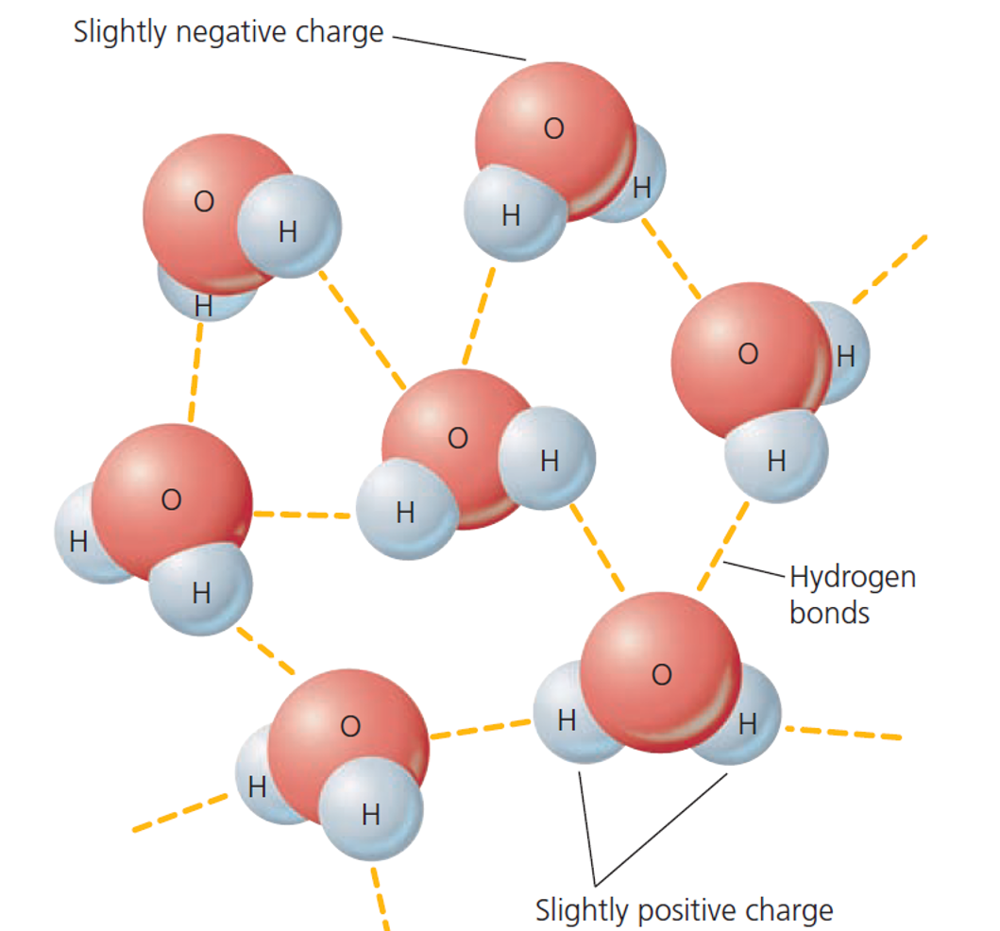
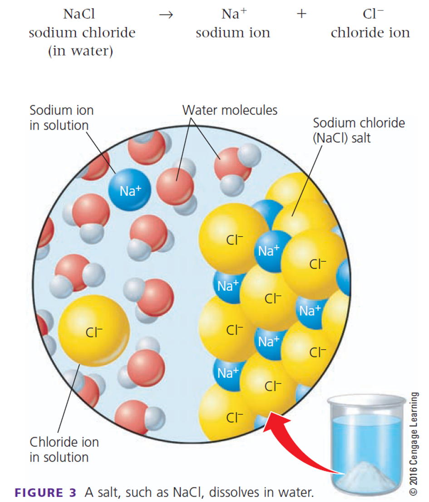

Sluneční záření je primárním zdrojem energie pro procesy v ekosystému — fotosyntézu, koloběh vody i proudění vzduchu.
Množství energie, které Země od Slunce přijímá, a množství, které sama vyzařuje zpět do vesmíru, musí být v dlouhodobém průměru vyrovnané — tomu se říká energetická bilance.
Pozitivní zpětná vazba prohlubuje počáteční změnu — každý krok posiluje ten následující.
Existuje i opačná, negativní (tlumící) vazba.
Zpětné vazby v klimatickém systému
Střecha výrobní haly je pokryta fotovoltaickými panely o ploše 2 000 m² a účinnosti 20 %. V jižních Čechách je roční ozáření ~1 100 kWh/m².
Vypočítejte vyrobenou energii za rok.
2 000 × 1 100 × 0,20 ≈ 440 000 kWh/rok = 440 MWh/rok
Vyrobená energie pokryje spotřebu přibližně 100 domácností.
V případě výrobní haly nemusí nutně pokrýt celý provoz, ale sníží závislost na spotové ceně.
Energetika je významný zdroj emisí skleníkových plynů v EU — spotřeba a zdroj energie přímo ovlivňují uhlíkovou stopu firmy.

Sluneční záření o vlnové délce 300 až 800 nm prochází atmosférou. Část se odráží zpět do vesmíru, ale přibližně 71 % je pohlcována zemským povrchem, který se tím zahřívá. Zahřátý povrch následně vyzařuje tepelnou energii převážně ve formě dlouhovlnného infračerveného záření.
Část tohoto záření pohlcují skleníkové plyny a oblaka v atmosféře. Ty pak infračervené záření znovu emitují ve všech směrech – část směřuje zpět k zemskému povrchu a část do vesmíru. Díky tomuto přirozenému skleníkovému efektu je povrch Země výrazně teplejší, než by byl bez atmosférických skleníkových plynů.
Přirozený skleníkový efekt zvyšuje průměrnou globální teplotu povrchu přibližně o 33 °C: z hypotetických −18 °C na současných přibližně +15 °C. Nejde tedy o nežádoucí jev – je nezbytnou podmínkou současných podmínek pro život na Zemi. Problém představuje zesilování přirozeného skleníkového efektu v důsledku rostoucí koncentrace skleníkových plynů, zejména v důsledku lidské činnosti.
Úkol: Skleníkové plyny se významně liší svou koncentrací, schopností absorbovat infračervené záření i dobou setrvání v atmosféře. Uveďte alespoň čtyři skleníkové plyny a vysvětlete, proč může mít plyn s výrazně nižší koncentrací než CO₂ přesto významný vliv na oteplování.
Radiačně aktivní plyny nejsou stejně „silné"
Oxidy síry (SO₂) a dusíku (NOₓ) reagují se vzdušnou vlhkostí na kyseliny:
SO₂ + H₂O → H₂SO₃ → (oxidací) H₂SO₄
NOₓ + H₂O → HNO₃


Voda pokrývá asi 71 % zemského povrchu. Přibližně 96,5 % vody na Zemi je uloženo v oceánech. Asi 2,5 % tvoří sladká voda. Zbytek představuje především slaná podzemní voda a další menší zásoby slané vody.
Vlastnosti vody

Vlastnosti vody

Plešné jezero, Šumava
V 70.–80. letech depozice síry a dusíku z průmyslových emisí (kyselé deště) snížila pH jezera natolik, že vymizely citlivé druhy, např. pstruh obecný. Po odsíření elektráren v 90. letech se kvalita vody postupně zlepšuje.
Zdroj: Plešné jezero a kůrovec, Biologické centrum AV ČR / PřF JU.
Lidský zásah do cyklu
- Odběr sladké vody rychleji, než ji doplňují přírodní procesy
- Zpevňování povrchu a odlesňování → víc odtoku, míň infiltrace
- Odvodňování mokřadů, které jinak fungují jako protipovodňová „houba"
pH půdy ovlivňuje dostupnost živin pro rostliny.
Sorpční komplex — jílové minerály a humus váží ionty živin (iontová výměna) a brání jejich vyplavení.
Humus zlepšuje strukturu půdy a schopnost zadržet vodu.
Sorpční komplex a iontová výměna
Eroze a úbytek organické hmoty se projeví jako klesající výnos a rostoucí cena suroviny — typicky o několik článků řetězce dál, u zpracovatele, který si degradaci půdy sám nezpůsobil, ale nese její cenové důsledky.
Energie, atmosféra, hydrosféra a pedosféra netvoří izolované kapitoly — energetická bilance se vrací u skleníkového jevu, kyselé deště se znovu objevují u Plešného jezera, sorpční komplex v půdě funguje na stejném principu jako hydratace iontů ve vodě.
Každá složka je zároveň vstupem, rizikem nebo omezením pro firemní rozhodování.